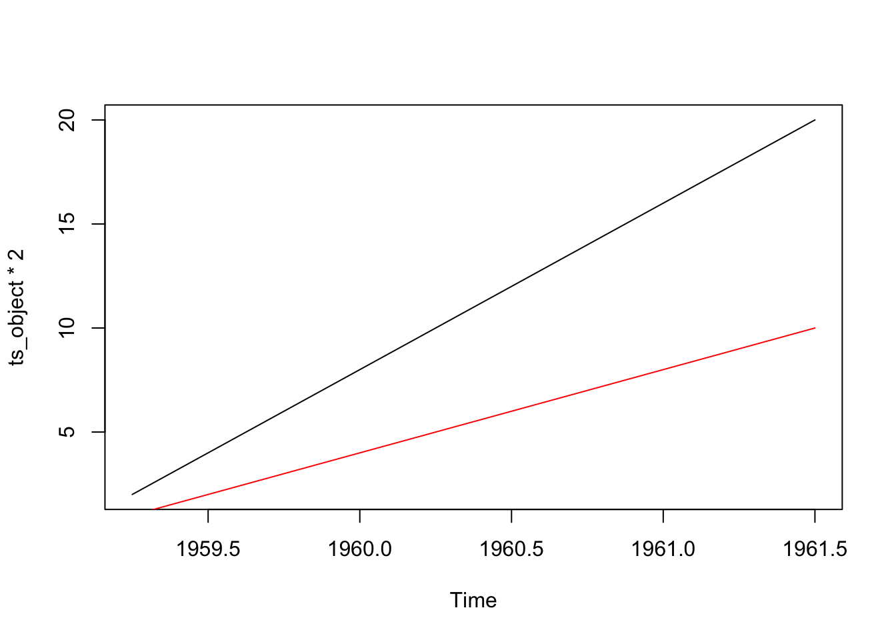

packages_to_install <- c("zoo", "xts", "dplyr", "tsibble", "lubridate", "XLConnect")
packages <- packages_to_install[! packages_to_install %in% installed.packages()[,"Package"]]
if (length(packages) > 0) {
install.packages(packages)
}1 - Traitement des séries temporelles sous R
Analyse des séries temporelles avec
L’objectif de ce TP est d’apprendre à manipuler les séries temporelles sous R en utilisant les packages de bases.
Dans R il existe de nombreux packages qui permettent de manipuler les séries temporelles. Pour n’en citer que quelques-uns :
- Les objets ts peuvent être créés à partir du package stats ;
- Les objets zoo peuvent être créés à partir du package zoo ;
- Les objets xts peuvent être créés à partir du package xts ;
- Les objets tis peuvent être créés à partir du package tseries ;
- Les objets tsibble peuvent être créés à partir du package tsibble.
tsbox permet quand à lui de facilement passer d’une classe à l’autre.
Ici nous nous concentrerons sur ts stocker les séries temporelles, zoo et xts pour effectuer certaines manipulations supplémentaires ainsi que sur tsibble.
Les packages suivants seront utilisés :
1 Manipulation des séries temporelles avec ts()
1.1 Création d’une série temporelle
La fonction ts() permet de créer des objets séries-temporelles à partir un vecteur (ou une matrice). La syntaxe de base est ts(vector, start=, end=, frequency=) où start et end sont la première et la dernière observation, frequency est le nombre d’observations par unité de temps (1=annuelle, 2=semestrielle, 4=trimestrielle, 6=bi-mestrielle, 12=mensuelle, etc.).
Par exemple pour créer une série trimestrielle ayant les valeurs de 1 à 10 et commençant en 1959Q2 :
ts(1:10, frequency = 4, start = c(1959, 2)) # 2ème trimestre de 1959 Qtr1 Qtr2 Qtr3 Qtr4
1959 1 2 3
1960 4 5 6 7
1961 8 9 10 # Équivalent à
ts(1:10, frequency = 4, start = 1959 + 1/4) Qtr1 Qtr2 Qtr3 Qtr4
1959 1 2 3
1960 4 5 6 7
1961 8 9 10 On peut aussi définir l’objet à partir de sa date de fin :
ts(1:10, frequency = 4, end = c(1959, 2)) Qtr1 Qtr2 Qtr3 Qtr4
1957 1 2 3 4
1958 5 6 7 8
1959 9 10 Si l’on directement extraire un sous-ensemble de la série on peut spécifier les paramètres end et start. Par exemple pour ne garder que les valeurs jusqu’en 1960 inclus :
ts(1:10, frequency = 4, start = c(1959, 2), end = c(1960, 4)) Qtr1 Qtr2 Qtr3 Qtr4
1959 1 2 3
1960 4 5 6 7Ou alors utiliser la fonction window une fois l’objet créé :
ts_object <- ts(1:10, frequency = 4, start = c(1959, 2))
window(ts_object, end = c(1960, 4)) Qtr1 Qtr2 Qtr3 Qtr4
1959 1 2 3
1960 4 5 6 7On peut récupérer les différents attributs avec les fonctions start(), end() et frequency() :
start(ts_object)[1] 1959 2end(ts_object)[1] 1961 3frequency(ts_object)[1] 4Deux autres fonctions peuvent aussi être utiles : time() crée un série-temporelle à partir des dates de notre série-temporelle et cycle() donne la position dans le cycle de chaque observation.
time(ts_object) Qtr1 Qtr2 Qtr3 Qtr4
1959 1959.25 1959.50 1959.75
1960 1960.00 1960.25 1960.50 1960.75
1961 1961.00 1961.25 1961.50 cycle(ts_object) Qtr1 Qtr2 Qtr3 Qtr4
1959 2 3 4
1960 1 2 3 4
1961 1 2 3
Exercice
Extraire toutes les données du 2ème trimestre de l’objet ts_object
Solution
ts_object[cycle(ts_object) == 2][1] 1 5 9Autre option : utiliser la fonction window()
window(ts_object, frequency = 1)Time Series:
Start = 1959.25
End = 1961.25
Frequency = 1
[1] 1 5 9Explication : lorsque l’on spécifie le paramètre frequency dans la fonction window(), on change la fréquence de la série. Dans notre cas, on veut extraire les valeurs du deuxième trimestre : on veut donc une série annuelle qui contient toutes les valeurs des deuxièmes trimestres. La première observation de ts_object étant un deuxième trimestre, cela donne ce que l’on veut. Pour extraire les valeurs des troisièmes trimestres il faut en plus changer la date de début :
window(ts_object, start = c(1950, 3), frequency = 1)Time Series:
Start = 1959.25
End = 1961.25
Frequency = 1
[1] 1 5 9
Exercice
Créer une série temporelle mensuelle qui commence en 2000, qui se termine en janvier 2020, qui vaut 1 en avril 2009 et 0 à toutes les autres dates.
Solution
Option 1 : utiliser la fonction window()
indicatrice <- ts(0, start = 2000, end = 2020, frequency = 12)
window(indicatrice, start = c(2009, 4), end = c(2009, 4)) <- 1
indicatrice Jan Feb Mar Apr May Jun Jul Aug Sep Oct Nov Dec
2000 0 0 0 0 0 0 0 0 0 0 0 0
2001 0 0 0 0 0 0 0 0 0 0 0 0
2002 0 0 0 0 0 0 0 0 0 0 0 0
2003 0 0 0 0 0 0 0 0 0 0 0 0
2004 0 0 0 0 0 0 0 0 0 0 0 0
2005 0 0 0 0 0 0 0 0 0 0 0 0
2006 0 0 0 0 0 0 0 0 0 0 0 0
2007 0 0 0 0 0 0 0 0 0 0 0 0
2008 0 0 0 0 0 0 0 0 0 0 0 0
2009 0 0 0 1 0 0 0 0 0 0 0 0
2010 0 0 0 0 0 0 0 0 0 0 0 0
2011 0 0 0 0 0 0 0 0 0 0 0 0
2012 0 0 0 0 0 0 0 0 0 0 0 0
2013 0 0 0 0 0 0 0 0 0 0 0 0
2014 0 0 0 0 0 0 0 0 0 0 0 0
2015 0 0 0 0 0 0 0 0 0 0 0 0
2016 0 0 0 0 0 0 0 0 0 0 0 0
2017 0 0 0 0 0 0 0 0 0 0 0 0
2018 0 0 0 0 0 0 0 0 0 0 0 0
2019 0 0 0 0 0 0 0 0 0 0 0 0
2020 0 Option 2 : utiliser time()
indicatrice <- ts(0, start = 2000, end = 2020, frequency = 12)
# Donne un vecteur de booléens
(time(indicatrice) == 2009 + 3/12) Jan Feb Mar Apr May Jun Jul Aug Sep Oct Nov Dec
2000 FALSE FALSE FALSE FALSE FALSE FALSE FALSE FALSE FALSE FALSE FALSE FALSE
2001 FALSE FALSE FALSE FALSE FALSE FALSE FALSE FALSE FALSE FALSE FALSE FALSE
2002 FALSE FALSE FALSE FALSE FALSE FALSE FALSE FALSE FALSE FALSE FALSE FALSE
2003 FALSE FALSE FALSE FALSE FALSE FALSE FALSE FALSE FALSE FALSE FALSE FALSE
2004 FALSE FALSE FALSE FALSE FALSE FALSE FALSE FALSE FALSE FALSE FALSE FALSE
2005 FALSE FALSE FALSE FALSE FALSE FALSE FALSE FALSE FALSE FALSE FALSE FALSE
2006 FALSE FALSE FALSE FALSE FALSE FALSE FALSE FALSE FALSE FALSE FALSE FALSE
2007 FALSE FALSE FALSE FALSE FALSE FALSE FALSE FALSE FALSE FALSE FALSE FALSE
2008 FALSE FALSE FALSE FALSE FALSE FALSE FALSE FALSE FALSE FALSE FALSE FALSE
2009 FALSE FALSE FALSE TRUE FALSE FALSE FALSE FALSE FALSE FALSE FALSE FALSE
2010 FALSE FALSE FALSE FALSE FALSE FALSE FALSE FALSE FALSE FALSE FALSE FALSE
2011 FALSE FALSE FALSE FALSE FALSE FALSE FALSE FALSE FALSE FALSE FALSE FALSE
2012 FALSE FALSE FALSE FALSE FALSE FALSE FALSE FALSE FALSE FALSE FALSE FALSE
2013 FALSE FALSE FALSE FALSE FALSE FALSE FALSE FALSE FALSE FALSE FALSE FALSE
2014 FALSE FALSE FALSE FALSE FALSE FALSE FALSE FALSE FALSE FALSE FALSE FALSE
2015 FALSE FALSE FALSE FALSE FALSE FALSE FALSE FALSE FALSE FALSE FALSE FALSE
2016 FALSE FALSE FALSE FALSE FALSE FALSE FALSE FALSE FALSE FALSE FALSE FALSE
2017 FALSE FALSE FALSE FALSE FALSE FALSE FALSE FALSE FALSE FALSE FALSE FALSE
2018 FALSE FALSE FALSE FALSE FALSE FALSE FALSE FALSE FALSE FALSE FALSE FALSE
2019 FALSE FALSE FALSE FALSE FALSE FALSE FALSE FALSE FALSE FALSE FALSE FALSE
2020 FALSE # on ajoute + 0 pour forcer la convertion en numérique
(time(indicatrice) == 2009 + 3/12) + 0 Jan Feb Mar Apr May Jun Jul Aug Sep Oct Nov Dec
2000 0 0 0 0 0 0 0 0 0 0 0 0
2001 0 0 0 0 0 0 0 0 0 0 0 0
2002 0 0 0 0 0 0 0 0 0 0 0 0
2003 0 0 0 0 0 0 0 0 0 0 0 0
2004 0 0 0 0 0 0 0 0 0 0 0 0
2005 0 0 0 0 0 0 0 0 0 0 0 0
2006 0 0 0 0 0 0 0 0 0 0 0 0
2007 0 0 0 0 0 0 0 0 0 0 0 0
2008 0 0 0 0 0 0 0 0 0 0 0 0
2009 0 0 0 1 0 0 0 0 0 0 0 0
2010 0 0 0 0 0 0 0 0 0 0 0 0
2011 0 0 0 0 0 0 0 0 0 0 0 0
2012 0 0 0 0 0 0 0 0 0 0 0 0
2013 0 0 0 0 0 0 0 0 0 0 0 0
2014 0 0 0 0 0 0 0 0 0 0 0 0
2015 0 0 0 0 0 0 0 0 0 0 0 0
2016 0 0 0 0 0 0 0 0 0 0 0 0
2017 0 0 0 0 0 0 0 0 0 0 0 0
2018 0 0 0 0 0 0 0 0 0 0 0 0
2019 0 0 0 0 0 0 0 0 0 0 0 0
2020 0 Pour tracer un graphique il suffit maintenant d’utiliser les fonctions plot() et lines()
plot(ts_object * 2)
lines(ts_object, col = "red")
1.2 Séries multivariées
De la même façon que précédemment on peut créer une série temporelle multivariée. Cette fois-ci l’objet créé est à la fois mts, ts et matrix
set.seed(1)
# On génère 300 observations d'une loi normale (0, 1)
loi_normale <- rnorm(300)
mts <- ts(matrix(loi_normale, nrow = 100, ncol = 3),
start = c(1961, 1), frequency = 12)On peut accéder à la première variable de la même façon que dans une matrice : par son nom ou son numéro de colonne :
colnames(mts)[1] "Series 1" "Series 2" "Series 3"# mts[,1] # ou de façon équivalente :
mts[, "Series 1"] Jan Feb Mar Apr May
1961 -0.626453811 0.183643324 -0.835628612 1.595280802 0.329507772
1962 -0.621240581 -2.214699887 1.124930918 -0.044933609 -0.016190263
1963 0.619825748 -0.056128740 -0.155795507 -1.470752384 -0.478150055
1964 -0.394289954 -0.059313397 1.100025372 0.763175748 -0.164523596
1965 -0.112346212 0.881107726 0.398105880 -0.612026393 0.341119691
1966 2.401617761 -0.039240003 0.689739362 0.028002159 -0.743273209
1967 0.610726353 -0.934097632 -1.253633400 0.291446236 -0.443291873
1968 0.593946188 0.332950371 1.063099837 -0.304183924 0.370018810
1969 -1.276592208 -0.573265414 -1.224612615 -0.473400636
Jun Jul Aug Sep Oct
1961 -0.820468384 0.487429052 0.738324705 0.575781352 -0.305388387
1962 0.943836211 0.821221195 0.593901321 0.918977372 0.782136301
1963 0.417941560 1.358679552 -0.102787727 0.387671612 -0.053805041
1964 -0.253361680 0.696963375 0.556663199 -0.688755695 -0.707495157
1965 -1.129363096 1.433023702 1.980399899 -0.367221476 -1.044134626
1966 0.188792300 -1.804958629 1.465554862 0.153253338 2.172611670
1967 0.001105352 0.074341324 -0.589520946 -0.568668733 -0.135178615
1968 0.267098791 -0.542520031 1.207867806 1.160402616 0.700213650
1969
Nov Dec
1961 1.511781168 0.389843236
1962 0.074564983 -1.989351696
1963 -1.377059557 -0.414994563
1964 0.364581962 0.768532925
1965 0.569719627 -0.135054604
1966 0.475509529 -0.709946431
1967 1.178086997 -1.523566800
1968 1.586833455 0.558486426
1969 Et avec les même fonctions que pour les matrices on peut récupérer les noms des colonnes (colnames), le nombre de variables (ncol), etc.
Attention
Une source classique d’erreur est de manipuler des séries-temporelles uni et multivariées et de vouloir utiliser les fonctions liées aux matrices sur les séries univariées. Par exemple, colnames(ts_object) renverra toujours l’objet NULL. Une solution est de tester si l’objet est multivarié avec la fonction is.mts().
1.3 Manipulation basiques
Pour concaténer plusieurs séries temporelles, les fonctions deux fonctions suivantes peuvent ts.union() et ts.intersect().
ts_object2 <- ts(1:10, frequency = 4, start = c(1960, 1))
ts.union(ts_object, ts_object2) # on garde toute la couverture temporelle en rajoutant des NA ts_object ts_object2
1959 Q2 1 NA
1959 Q3 2 NA
1959 Q4 3 NA
1960 Q1 4 1
1960 Q2 5 2
1960 Q3 6 3
1960 Q4 7 4
1961 Q1 8 5
1961 Q2 9 6
1961 Q3 10 7
1961 Q4 NA 8
1962 Q1 NA 9
1962 Q2 NA 10ts.intersect(ts_object, ts_object2) # on ne garde que les périodes communes ts_object ts_object2
1960 Q1 4 1
1960 Q2 5 2
1960 Q3 6 3
1960 Q4 7 4
1961 Q1 8 5
1961 Q2 9 6
1961 Q3 10 7On va maintenant utiliser la série d’indice de production industrielle de la France (CVS-CJO) :
ipi_fr_manuf <- ts(c(99, 99.4, 99.7, 99.4, 100.8, 100, 98.7, 100.2, 101.2,
100.6, 99.9, 100.9, 102.4, 100.8, 99.5, 100.7, 99.8, 99.1, 99.8,
101.6, 100.4, 99.4, 102.8, 101, 100.2, 101.1, 102.6, 101.8, 103.7,
103, 103.6, 103.5, 104.4, 105.6, 105.5, 105.9, 103.6, 102.9,
103.8, 103.8, 102.5, 104.2, 104, 104.6, 103.4, 104.2, 103.4,
103.7, 104.9, 105.8, 104.4, 104.3, 106, 103.7, 104.1, 103.1,
103.9, 104.4), start = 2015, frequency = 12)Pour calculer la série retardée/avancée, il suffit d’utiliser la fonction lag() :
# série retardée d'un mois : en février 2010 on a la valeur de janvier 2010
lag(ipi_fr_manuf, k = -1)
Attention
Une fois que l’on a chargé dplyr, la fonction lag() utilisée par défaut est modifiée ! Si vous avez une erreur en exécutant le code précédent, c’est sûrement que vous avez chargé ce package !
Pour éviter ces erreurs, une façon de faire est de remplacer les lag() par des stats::lag() pour forcer l’utilisation de la fonction lag() du package stats. Si l’on veut éviter les erreurs de conflits entre les packages, on peut également utiliser le package conflicted.
La fonction diff permet de calculer la différence entre deux périodes
diff(ipi_fr_manuf, lag = 1)
Exercice
Écrire une fonction ev() qui calcule l’évolution mensuelle si la série en entrée est mensuelle, l’évolution trimestrielle si la série en entrée est trimestrielle, etc.
La fonction ev() transformera donc toute série \(X_t\) en : \[
Y_t=\frac{X_t-X_{t-1}}{
X_{t-1}
}=\frac{X_t}{
X_{t-1}
} - 1.
\]
Solution
ev <- function(x){
result <- (x/stats::lag(x, k = -1) - 1) * 100
return(result)
}
# Ou de manière équivalente :
ev2 <- function(x){
# Attention ici c'est bien k = 1 dans la fonction diff
# et k = -1 dans la fonction lag
result <- (diff(x, lag = 1) /lag(x, k = -1)) * 100
return(result)
}Remarque : pour des raisons informatiques ces deux fonctions ne donnent pas exactement le même résultat. C’est un problème récurrent lorsque l’on souhaite tester l’égalité entre deux séries temporelles :
all(ev(ipi_fr_manuf) == ev2(ipi_fr_manuf))[1] FALSEUne solution est plutôt d’utiliser la fonction all.equal() :
isTRUE(all.equal(ev(ipi_fr_manuf), ev2(ipi_fr_manuf)))[1] TRUE2 Utilisation de xts et zoo
2.1 Utilisation de xts
Un des avantages du package xts est qu’il permet d’appliquer une fonction à chaque période d’une série temporelle (par exemple à toutes les données trimestrielles, annuelles, etc.). Il s’agit des fonctions apply.monthly(), apply.quarterly(), apply.yearly(), etc. Pour cela il faut auparavant convertir les données au format xts.
Par exemple pour calculer la moyenne annuelle :
library(xts)
moy_an <- apply.yearly(as.xts(ipi_fr_manuf), mean)
moy_an [,1]
Dec 2015 99.98333
Dec 2016 100.60833
Dec 2017 103.40833
Dec 2018 103.67500
Oct 2019 104.46000
Exercice
Calculer l’évolution trimestrielle de ipi_fr_manuf.
Solution
Tout d’abord on prolonge l’IPI par des valeurs manquantes jusqu’à la fin de l’année, sinon la dernière somme sur le trimestre est fausse.
ipi_fr_manuf_prolonge <- window(ipi_fr_manuf, end = c(2019, 12), extend = TRUE)
somme_trim <- apply.quarterly(as.xts(ipi_fr_manuf_prolonge), sum)Attention la fonction lag n’agit pas pareil pour les objets xts et ts : il faut ici utiliser l’option k = 1. Voir l’aide associée à ?lag.xts. Pour garder la même convention entre lag.ts() et lag.xts() on peut utiliser l’option options(xts.compat.zoo.lag=TRUE).
evol_trim <- (somme_trim/lag(somme_trim, k = 1) - 1) * 100On peut utiliser la fonction format() si l’on veut convertir automatiquement en un objet ts :
start_year <- as.numeric(format(start(evol_trim), "%Y"))
start_quarter <- as.numeric(substr(quarters(start(evol_trim)), 2, 2))
ts(evol_trim, start = c(start_year, start_quarter), frequency = 4) Qtr1 Qtr2 Qtr3 Qtr4
2015 NA 0.70446159 -0.03331113 0.43318894
2016 0.43132050 -1.02411629 0.73431242 0.46388337
2017 0.23087071 1.51365581 0.97244733 1.76565008
2018 -2.11356467 0.06445375 0.48309179 -0.22435897
2019 1.22068744 -0.34909553 -0.92356688 NAOn peut aussi directement utiliser le package ts_box et la fonction ts_ts() :
tsbox::ts_ts(evol_trim) Qtr1 Qtr2 Qtr3 Qtr4
2015 NA 0.70446159 -0.03331113
2016 0.43318894 0.43132050 -1.02411629 0.73431242
2017 0.46388337 0.23087071 1.51365581 0.97244733
2018 1.76565008 -2.11356467 0.06445375 0.48309179
2019 -0.22435897 1.22068744 -0.34909553 -0.92356688
2020 NA On aurait en fait pu le faire directement avec les fonctions de base R ! Par contre la situation aurait été plus compliquée avec des données haute fréquence (du type journalières) non correctement gérées par ts :
stats::aggregate.ts(ipi_fr_manuf, nfrequency = 4,
FUN = mean) Qtr1 Qtr2 Qtr3 Qtr4
2015 99.36667 100.06667 100.03333 100.46667
2016 100.90000 99.86667 100.60000 101.06667
2017 101.30000 102.83333 103.83333 105.66667
2018 103.43333 103.50000 104.00000 103.76667
2019 105.03333 104.66667 103.70000 Cette fonction fait ici une somme sur 4 périodes consécutives mais ne reconnait pas les différents mois des trimestres :
stats::aggregate.ts(window(ipi_fr_manuf, start = c(2015,2)), nfrequency = 4,
FUN = mean)Time Series:
Start = 2015.08333333333
End = 2019.58333333333
Frequency = 4
[1] 99.50000 99.83333 100.66667 101.06667 100.33333 99.56667 100.46667
[8] 101.33333 101.83333 103.43333 104.50000 105.00000 103.50000 103.56667
[15] 104.06667 104.00000 104.83333 104.60000 103.800002.2 Utilisation de zoo
Le package zoo donne un ensemble d’outils qui permettent de manipuler les séries-temporelles. De nombreux packages (dont xts) sont d’ailleurs basés sur ce format. Il permet notamment de faire des imputations de données manquantes selon différentes fonctions (toutes les fonctions commençant par na.) et de mieux gérer le format des dates associées aux séries temporelles (ce qui permet de faire des manipulations avec la fonction format, ce qui permet par exemple plus facilement exporter des séries temporelles sous Excel). Le calcul de l’évolution trimestrielle aurait par exemple pu être faite avec ce package :
ipi_fr_manuf_prolonge <- window(ipi_fr_manuf, end = c(2019, 12), extend = TRUE)
somme_trim <- aggregate(as.zoo(ipi_fr_manuf_prolonge), yearqtr, sum)
somme_trim <- as.ts(somme_trim) #La conversion en ts est plus simple depuis un objet zoo
evol_trim <- ev(somme_trim)
evol_trim Qtr1 Qtr2 Qtr3 Qtr4
2015 0.70446159 -0.03331113 0.43318894
2016 0.43132050 -1.02411629 0.73431242 0.46388337
2017 0.23087071 1.51365581 0.97244733 1.76565008
2018 -2.11356467 0.06445375 0.48309179 -0.22435897
2019 1.22068744 -0.34909553 -0.92356688 NAPour le prochain exercice, utiliser la série suivante :
serie_avec_NA <- ts(c(NA, NA, NA, NA, NA, NA, NA, NA, NA, NA, NA, NA, 0, 0, 0, 0,
0, 0, 0, 0, 0, 0, 0, 0, 0, 0, 0, 0, 0, 0, 0, 0, 0, 0, 0, 0, NA,
NA, NA, NA, NA, NA, NA, NA, NA, NA, NA, NA, NA, NA, NA, NA, NA,
NA, NA, NA, NA, NA, NA, NA, 1, 1, 1, 1, 1, 1, 1, 1, 1, 1, 1,
1, 1, 1, 1, 1, 1, 1, 1, 1, 1, 1, 1, 1, NA, NA, NA, NA, NA, NA,
NA, NA, NA, NA, NA, NA), start = 2000, frequency = 12)
Exercice
Sur la série serie_avec_NA, utiliser les différentes fonctions du package zoo pour :
- Enlever les valeurs manquantes au début de la série ;
- Remplacer les valeurs manquantes à la fin de la série par la dernière valeur observée.
- Interpoler de manière linéaire les valeurs manquantes entre les 0 et les 1.
Indice
Les trois fonctions à utiliser sont : na.trim(), na.locf et na.approx(). Il faudra peut-être inverser deux étapes pour que cela marche.
Solution
D’abord on enlève les valeurs manquantes au début de la série
etape_1 <- na.trim(serie_avec_NA, sides = "left")
etape_1 Jan Feb Mar Apr May Jun Jul Aug Sep Oct Nov Dec
2001 0 0 0 0 0 0 0 0 0 0 0 0
2002 0 0 0 0 0 0 0 0 0 0 0 0
2003 NA NA NA NA NA NA NA NA NA NA NA NA
2004 NA NA NA NA NA NA NA NA NA NA NA NA
2005 1 1 1 1 1 1 1 1 1 1 1 1
2006 1 1 1 1 1 1 1 1 1 1 1 1
2007 NA NA NA NA NA NA NA NA NA NA NA NAEnsuite on interpole
etape_2 <- na.approx(etape_1, na.rm = FALSE)
etape_2 Jan Feb Mar Apr May Jun Jul Aug Sep Oct Nov Dec
2001 0.00 0.00 0.00 0.00 0.00 0.00 0.00 0.00 0.00 0.00 0.00 0.00
2002 0.00 0.00 0.00 0.00 0.00 0.00 0.00 0.00 0.00 0.00 0.00 0.00
2003 0.04 0.08 0.12 0.16 0.20 0.24 0.28 0.32 0.36 0.40 0.44 0.48
2004 0.52 0.56 0.60 0.64 0.68 0.72 0.76 0.80 0.84 0.88 0.92 0.96
2005 1.00 1.00 1.00 1.00 1.00 1.00 1.00 1.00 1.00 1.00 1.00 1.00
2006 1.00 1.00 1.00 1.00 1.00 1.00 1.00 1.00 1.00 1.00 1.00 1.00
2007 NA NA NA NA NA NA NA NA NA NA NA NAEnfin on remplace les valeurs à la fin de la série
etape_3 <- na.locf(etape_2)
etape_3 Jan Feb Mar Apr May Jun Jul Aug Sep Oct Nov Dec
2001 0.00 0.00 0.00 0.00 0.00 0.00 0.00 0.00 0.00 0.00 0.00 0.00
2002 0.00 0.00 0.00 0.00 0.00 0.00 0.00 0.00 0.00 0.00 0.00 0.00
2003 0.04 0.08 0.12 0.16 0.20 0.24 0.28 0.32 0.36 0.40 0.44 0.48
2004 0.52 0.56 0.60 0.64 0.68 0.72 0.76 0.80 0.84 0.88 0.92 0.96
2005 1.00 1.00 1.00 1.00 1.00 1.00 1.00 1.00 1.00 1.00 1.00 1.00
2006 1.00 1.00 1.00 1.00 1.00 1.00 1.00 1.00 1.00 1.00 1.00 1.00
2007 1.00 1.00 1.00 1.00 1.00 1.00 1.00 1.00 1.00 1.00 1.00 1.00
Exercice
À l’aide des fonctions as.yearmon() et format(), créer un data.frame contenant une colonne “date” qui contient les dates au format JJ/MM/YYYY et une deuxième colonnes avec les valeurs de ipi_fr_manuf.
Indice
La fonction as.yearmon() doit être appliquée sur time(ipi_fr_manuf). Pour la fonction format regarder l’aide ?format.Date.
Solution
dates <- as.yearmon(time(ipi_fr_manuf))
dates <- format(dates, "%d/%m/%Y")
donnees_formatees <- data.frame(date = dates, ipi = ipi_fr_manuf)
head(donnees_formatees) date ipi
1 01/01/2015 99.0
2 01/02/2015 99.4
3 01/03/2015 99.7
4 01/04/2015 99.4
5 01/05/2015 100.8
6 01/06/2015 100.0Il peut également être utile d’exporter un objet R ts ou mts vers un fichier Excel, tout en rajoutant une colonne “date” qui sera au format date. Ci-dessous un exemple en utilisant le package XLConnect :
library(XLConnect)
ts2xls <- function(x, file, sheet="Feuille 1", format = "dd/mm/yyyy"){
wb <- loadWorkbook(file, create = TRUE)
createSheet(wb, sheet)
if(is.mts(x)){
col <- c("date", colnames(x))
}else{
col <- c("date", "x")
}
# Le titre
writeWorksheet(wb,matrix(col,nrow = 1),
sheet = sheet,startCol = 1,startRow =1,
header = FALSE)
# Petit trick pour que la colonne date soit au format date d'Excel
csDate <- getOrCreateCellStyle(wb, name = "date")
setDataFormat(csDate, format = format)
date <- as.Date(format(zoo::as.Date((time(x))), "%d/%m/%Y"),
"%d/%m/%Y")
writeWorksheet(wb,date,sheet = sheet,
startCol = 1,startRow = 2,
header = FALSE)
setCellStyle(wb, sheet = sheet, row = seq_along(date)+1,
col = 1,
cellstyle = csDate)
# Fin colonne date
# Autres colonnes
writeWorksheet(wb,x,sheet = sheet,startCol = 2,startRow = 2,
header = FALSE)
setColumnWidth(wb, sheet, column = seq_along(col), width = -1)
saveWorkbook(wb, file)
}3 Manipulation avec tsibble
Le format tsibble est un autre format de gestion des séries temporelles
library(tsibble)
mts_tsibble <- as_tsibble(mts)
ipi_tsibble <- as_tsibble(ipi_fr_manuf)
Exercice
Calculer les moyennes trimestrielles de chaque série de mts_tsibble et ipi_tsibble.
Indice
Il faut utiliser à la fois index_by et group_by_key().
Solution
library(dplyr)
mts_tsibble %>%
group_by_key() %>%
index_by(date = ~ yearquarter(.)) %>%
summarise(moy = mean(value))# A tsibble: 102 x 3 [1Q]
# Key: key [3]
key date moy
<chr> <qtr> <dbl>
1 Series 1 1961 Q1 -0.426
2 Series 1 1961 Q2 0.368
3 Series 1 1961 Q3 0.601
4 Series 1 1961 Q4 0.532
5 Series 1 1962 Q1 -0.570
6 Series 1 1962 Q2 0.294
7 Series 1 1962 Q3 0.778
8 Series 1 1962 Q4 -0.378
9 Series 1 1963 Q1 0.136
10 Series 1 1963 Q2 -0.510
# ℹ 92 more rowsipi_tsibble %>%
group_by_key() %>%
index_by(date = ~ yearquarter(.)) %>%
summarise(moy = mean(value))# A tsibble: 20 x 2 [1Q]
date moy
<qtr> <dbl>
1 2015 Q1 99.4
2 2015 Q2 100.
3 2015 Q3 100.
4 2015 Q4 100.
5 2016 Q1 101.
6 2016 Q2 99.9
7 2016 Q3 101.
8 2016 Q4 101.
9 2017 Q1 101.
10 2017 Q2 103.
11 2017 Q3 104.
12 2017 Q4 106.
13 2018 Q1 103.
14 2018 Q2 104.
15 2018 Q3 104
16 2018 Q4 104.
17 2019 Q1 105.
18 2019 Q2 105.
19 2019 Q3 104.
20 2019 Q4 104.
Exercice
- En utilisant la fonction
dplyr::full_join(), créer un objettsibblecontenant les valeurs demts_tsibbleetipi_tsibble. - Comparer les résultats avec
dplyr::left_join()etdplyr::right_join(). - Quelle serait l’équivalent de
ts.intersect()etts.union()?
Solution
mts_tsibble %>% full_join(ipi_tsibble, by = "index") # comme ts.union()# A tsibble: 358 x 4 [1M]
# Key: key [4]
index key value.x value.y
<mth> <chr> <dbl> <dbl>
1 1961 Jan Series 1 -0.626 NA
2 1961 Feb Series 1 0.184 NA
3 1961 Mar Series 1 -0.836 NA
4 1961 Apr Series 1 1.60 NA
5 1961 May Series 1 0.330 NA
6 1961 Jun Series 1 -0.820 NA
7 1961 Jul Series 1 0.487 NA
8 1961 Aug Series 1 0.738 NA
9 1961 Sep Series 1 0.576 NA
10 1961 Oct Series 1 -0.305 NA
# ℹ 348 more rowsmts_tsibble %>% left_join(ipi_tsibble, by = "index")# A tsibble: 300 x 4 [1M]
# Key: key [3]
index key value.x value.y
<mth> <chr> <dbl> <dbl>
1 1961 Jan Series 1 -0.626 NA
2 1961 Feb Series 1 0.184 NA
3 1961 Mar Series 1 -0.836 NA
4 1961 Apr Series 1 1.60 NA
5 1961 May Series 1 0.330 NA
6 1961 Jun Series 1 -0.820 NA
7 1961 Jul Series 1 0.487 NA
8 1961 Aug Series 1 0.738 NA
9 1961 Sep Series 1 0.576 NA
10 1961 Oct Series 1 -0.305 NA
# ℹ 290 more rowsmts_tsibble %>% right_join(ipi_tsibble, by = "index")# A tsibble: 58 x 4 [1M]
# Key: key [1]
index key value.x value.y
<mth> <chr> <dbl> <dbl>
1 2015 Jan <NA> NA 99
2 2015 Feb <NA> NA 99.4
3 2015 Mar <NA> NA 99.7
4 2015 Apr <NA> NA 99.4
5 2015 May <NA> NA 101.
6 2015 Jun <NA> NA 100
7 2015 Jul <NA> NA 98.7
8 2015 Aug <NA> NA 100.
9 2015 Sep <NA> NA 101.
10 2015 Oct <NA> NA 101.
# ℹ 48 more rowsmts_tsibble %>% inner_join(ipi_tsibble, by = "index") # ts.intersect# A tsibble: 0 x 4 [?]
# Key: key [0]
# ℹ 4 variables: index <mth>, key <chr>, value.x <dbl>, value.y <dbl>Les index vont être des dates : on peut facilement les manipuler en utilisant le package lubdridate. Par exemple pour ne que garder que les dates à partir de l’année 2000 :
library(lubridate)
ipi_tsibble %>%
filter(year(index) >= 2000)# A tsibble: 58 x 2 [1M]
index value
<mth> <dbl>
1 2015 Jan 99
2 2015 Feb 99.4
3 2015 Mar 99.7
4 2015 Apr 99.4
5 2015 May 101.
6 2015 Jun 100
7 2015 Jul 98.7
8 2015 Aug 100.
9 2015 Sep 101.
10 2015 Oct 101.
# ℹ 48 more rowsPour extraire les données à partir d’un certain mois (mars 2018 par exemple) on peut utiliser la fonction tsibble::make_yearmonth() :
ipi_tsibble %>%
filter(index >= make_yearmonth(2000,6))# A tsibble: 58 x 2 [1M]
index value
<mth> <dbl>
1 2015 Jan 99
2 2015 Feb 99.4
3 2015 Mar 99.7
4 2015 Apr 99.4
5 2015 May 101.
6 2015 Jun 100
7 2015 Jul 98.7
8 2015 Aug 100.
9 2015 Sep 101.
10 2015 Oct 101.
# ℹ 48 more rows
Exercice
À l’aide du package lubridate, extraire toutes les données du mois de janvier et juillet de l’objet ipi_tsibble.
Indice
Regarder ce que donne
ipi_tsibble %>% mutate(month = lubridate::month(index))# A tsibble: 58 x 3 [1M]
index value month
<mth> <dbl> <dbl>
1 2015 Jan 99 1
2 2015 Feb 99.4 2
3 2015 Mar 99.7 3
4 2015 Apr 99.4 4
5 2015 May 101. 5
6 2015 Jun 100 6
7 2015 Jul 98.7 7
8 2015 Aug 100. 8
9 2015 Sep 101. 9
10 2015 Oct 101. 10
# ℹ 48 more rows
Solution
library(lubridate)
ipi_tsibble %>%
filter(month(index) %in% c(1,7))# A tsibble: 10 x 2 [1M]
index value
<mth> <dbl>
1 2015 Jan 99
2 2015 Jul 98.7
3 2016 Jan 102.
4 2016 Jul 99.8
5 2017 Jan 100.
6 2017 Jul 104.
7 2018 Jan 104.
8 2018 Jul 104
9 2019 Jan 105.
10 2019 Jul 104.